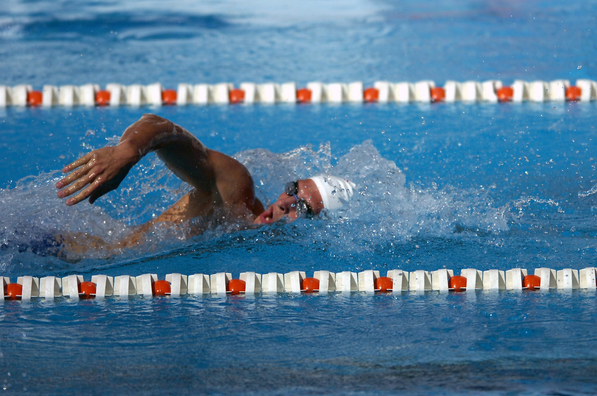
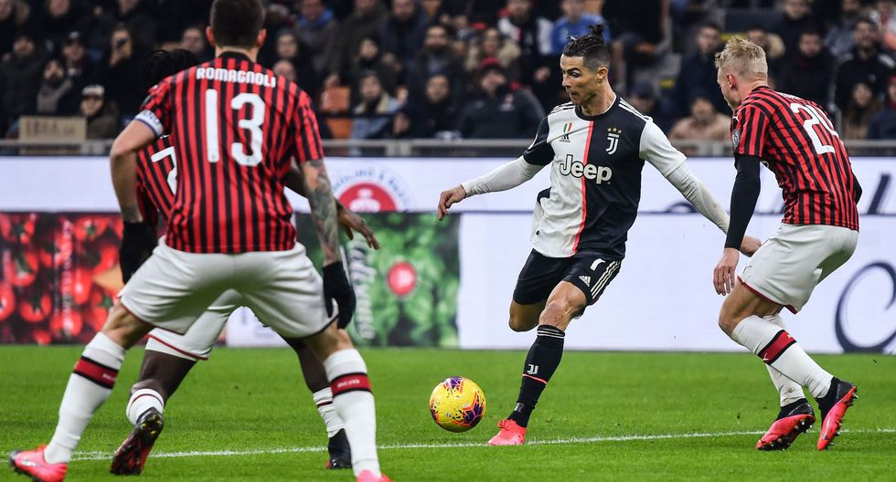
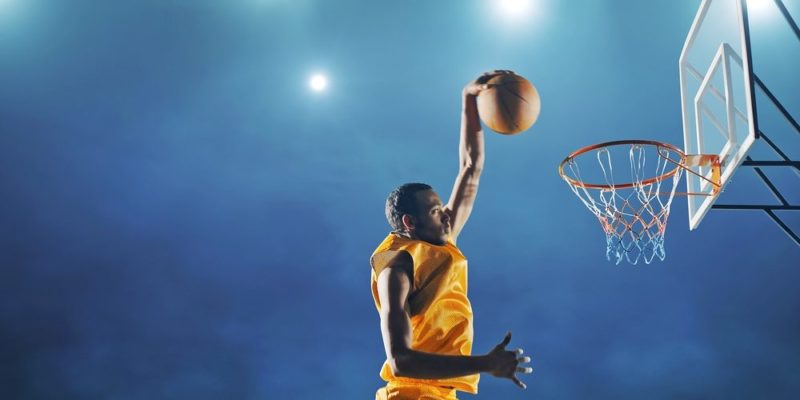
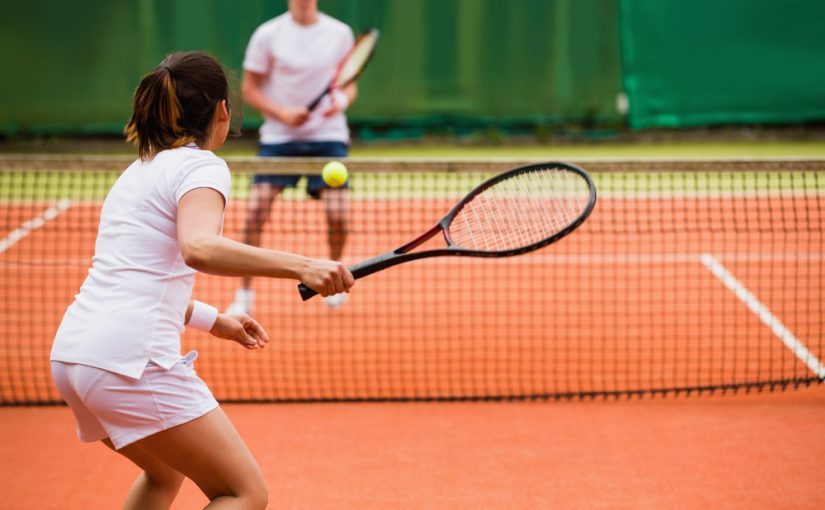

La natación es un deporte que consiste en el desplazamiento de una persona en el agua, sin que esta toque el suelo. Es regulado por la Federación Internacional de Natación. La historia de la natación se remonta a la Prehistoria; se han descubierto pinturas sobre natación de la Edad de Piedra de hace 7500 años y las primeras referencias escritas datan del 2000 a.C.
Por increíble que parezca, es el deporte más practicado del mundo con 1.500 millones de personas en el mundo. Las piscinas de todo el mundo, y seguramente también las playas para quien nade en aguas abiertas, se llenan cada día de nadadores para disfrutar de uno de los deportes más completos que existen en cuanto al ejercicio que nos hace realizar.
El Campeonato Mundial de Natación (también denominado Campeonato Mundial de Deportes Acuáticos o Campeonato Mundial de la FINA) es la máxima competición internacional de los deportes acuáticos. Es realizado desde 1973 por la Federación Internacional de Natación (FINA). Desde su novena edición, en 2001, se lleva a cabo cada año impar.
La nadadora chilena con más récords es Inés Marín.
El mejor nadador del mundo es Michael Phelps.
2. Fútbol
El fútbol(del inglés británico football, traducido como balompié) es un deporte de equipo jugado entre dos conjuntos de once jugadores cada uno y algunos árbitros que se ocupan de que las normas se cumplan correctamente.
La humanidad ha realizado a lo largo de su historia diversos juegos de pelota, desde la Antigüedad. Se conoce que este entretenimiento existía tanto en la cultura del Mar Mediterráneo como en América. El hallazgo más antiguo y revelador se remonta a un relieve de la Antigua Grecia (400 a. C.), donde un hombre domina una pelota sobre su muslo.
El fútbol es posiblemente el deporte más popular y seguido del mundo, aunque se queda por detrás de la natación pese a superar los 1.000 millones de practicantes en el mundo.
Lionel Messi
Alexis Sánchez
UEFA Champions League
Primera División de Chile (Campeonato AFP Plan Vital)
3. Baloncesto
El baloncesto es un deporte de equipo en el que se enfrentan dos formaciones en una cancha rectangular. Cada equipo está formado por cinco jugadores y el objetivo de cada uno es obtener más puntos que el rival, lo cual se realiza introduciendo la pelota en una canasta.
El baloncesto nació en EEUU en el año 1891, lo inventó un Sacerdote Canadiense llamado James Naismith, este sacerdote viajó a Massachussets (EEUU) como profesor de “cultura física”, una vez allí observó que las bajas temperaturas no permitían practicar deportes al aire libre, así surgió el baloncesto como deporte que se podía practicar en recintos cerrados.
Michael Jordan.
Nicolás Carvacho.
Campeonato Mundial de Clubes de Baloncesto.
Liga Nacional de Básquetbol de Chile.
4. Tenis
El tenis, también llamado tenis de campo, es un deporte de raqueta practicado sobre una pista rectangular (compuesta por distintas superficies las cuales pueden ser cemento, tierra, o césped), delimitada por líneas y dividida por una red. Se disputa entre dos jugadores (individuales) o entre dos parejas (dobles). El objetivo del juego es lanzar una pelota golpeándola con la raqueta de modo que rebote en la otra cancha pasando la red dentro de los límites permitidos del campo del rival, procurando que este no pueda devolverla para conseguir un segundo rebote en el suelo y por ende un punto.
Se originó en Europa a finales del siglo XVIII y se expandió en un principio por los países angloparlantes, especialmente entre sus clases altas. En la actualidad el tenis se ha universalizado, y es jugado en casi todos los países del mundo. Desde 1926, con la creación del primer tour, es un deporte profesional.
Unas 300 millones de personas son aficionadas al deporte de la raqueta en cualquiera de sus superficies: cemento, pista rápida, tierra batida, hierba… el amplio abanico de opciones hace que se pueda practicar en cualquier parte y en el momento del año que uno quiera.
Novak Djokovic, es el número 1 del mundo según el ranking ATP.
Marcelo Ríos, fue el número 1 del mundo en el año en 1998.
Grand Slam.
Copa LP Chile.
5. Balonmano
Consta de 7 jugadores por lado, dos extremos, dos laterales, un central, un pivote y un portero; cada equipo tiene el objetivo de anotar el mayor numero de puntos en la portería contraria; Este deporte es relativamente joven, nació en el primer cuarto del S.XX, recien en 1926 se estableció el primer reglamento.
A nivel internacional los mayores referentes son Mikkel Hansen y Nikola Karabatić; A nivel nacional los mayores referentes han sido los jugadores de la selección chilena, pero el mas destacado a sido su capitán Marco Oneto. En cuanto a los mayores torneos tenemos los campeonatos mundiales, la liga europea, la copa del rey, etc.
Multimedia

Natación

Fútbol

Baloncesto

TenisBalonmano